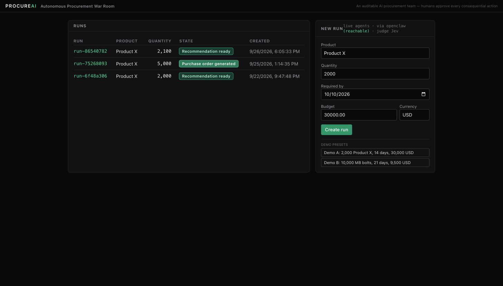
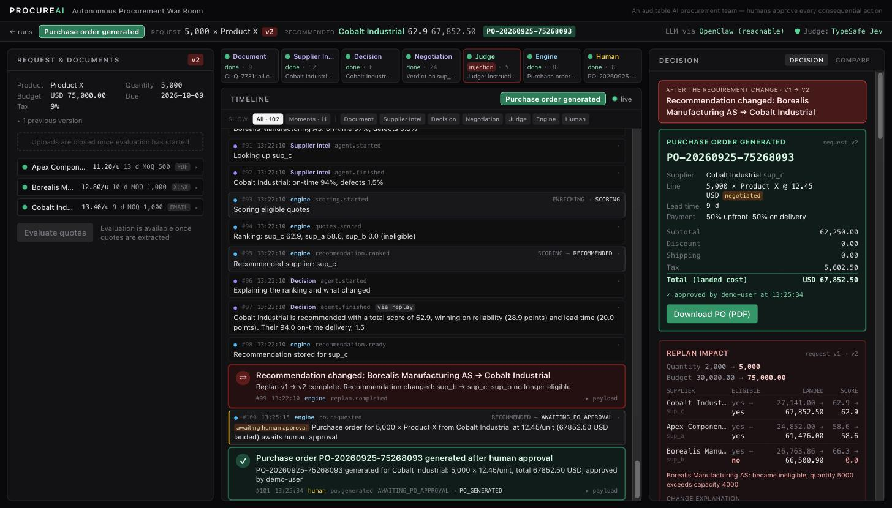

Team code PCNEI7FK · Problem statement: Supplier Comparison · Captured 2026-09-26
{"mode":"live","llm_gateway":"configured","llm_backend":"openclaw","openclaw":"reachable",
"gateway":"reachable","llm":"ok","openclaw_tasks":["draft","explain","explain_diff","extract"],
"guardrail_judge":"jev","judge_model":"jev-1.13.0","runs":3,"runs_persisted":true}
| Item | Value |
|---|---|
| Host | AWS Lightsail, Ubuntu 24.04 LTS, 4 GB plan, region ap-southeast-1 (per sponsor starter kit) |
| Public IP | 47.129.120.76 (port 80 via nginx; 8000 and 18789 loopback only) |
| Agent runtime | OpenClaw 2026.9.5, systemd user unit `openclaw-gateway.service`, provider = organiser AWS LLM gateway, model `sonnet4.5:latest` (Claude Sonnet 4.5 on Bedrock) |
| Dedicated agent | `agents.entries.procureai`, tools denied, no bootstrap, stateless per request |
| Backend | `procureai-backend.service` (uvicorn), `MODE=live`, `LLM_BACKEND=openclaw`, Jev judge, runs persisted under `data/runs/` |
| Frontend | Vite build served by nginx, `/api/` proxied with SSE-safe settings |
| Deploy | `scripts/deploy.sh` (`just deploy`); pre-flight `scripts/preflight.sh` (`just preflight`, 15 checks) |
| Drills | docs/DRILLS.md: 7 failure drills executed on this box (runtime down, model down, backend restart, bad uploads, instance reboot, interrupt with draft pending, scripted break-it sequence) |
just preflight # all PASS against the box just seed po # drives a fresh run to PO_GENERATED on the box in ~1 s (cache warm) just seed po --scenario b # the second scenario

